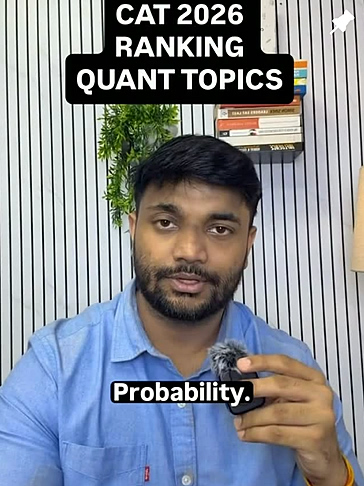
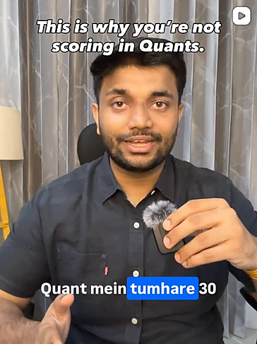
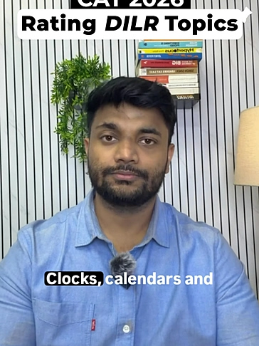
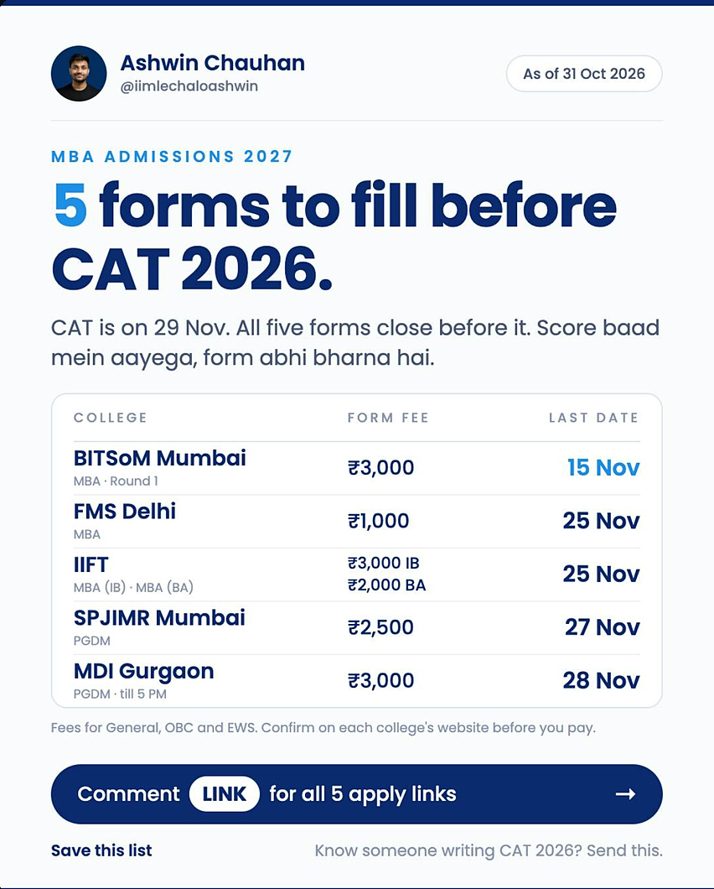
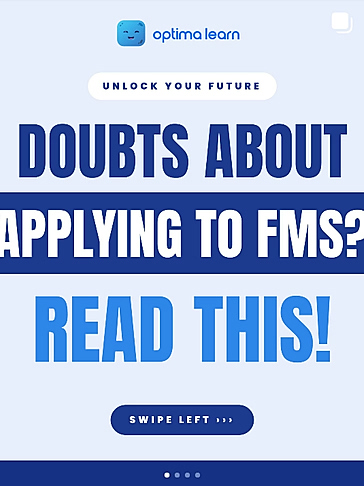
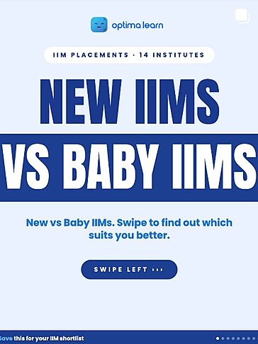
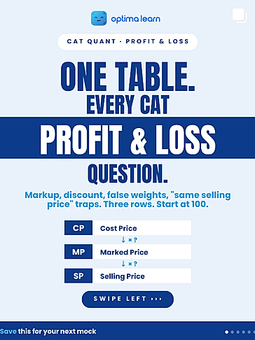

Ashwin: the big brother
The bro you go to when you mess up a little. He's your friend, he's always there, he'll guide you and he'll call you out. He never pressures you, but if you need guiding, he's right there.
I run two Instagram accounts. Ashwin, the founder, is the big brother. Optima is the friendly brand with everything you need. To write for CAT aspirants, I learned to think like one. Together the two accounts are how Optima gets its users.
01
→ where it started
I joined in March 2026 as content head. The company needed revenue, and revenue needed users. Building a brand from zero takes time we didn't have, but Ashwin, the founder, already had a face and a voice people could trust. So we started with him. In March his Instagram got 8.9K views and 43 new followers for the whole month, so there was a long way to go. Now Optima is growing into a brand of its own.
“The founder was the fastest way in. Optima was always where we were headed.”
→ and then i went deep
At some point I realised surface-level content wasn't going to work. If I wanted to talk to CAT aspirants and make content that was actually good for them, I had to think like one. So I became one, for a while.
That's where the content comes from: not what an aspirant might want to hear, but what they actually need to know.
02
→ two accounts, two very different voices
The bro you go to when you mess up a little. He's your friend, he's always there, he'll guide you and he'll call you out. He never pressures you, but if you need guiding, he's right there.
There's too much content online, and not everyone's the same. Optima is the friendly one with everything you need in one place: personalised prep with AI, guided by human mentors.
03
→ how each account looks and sounds
“DILR isn't hard. Random practice is.”
“Okay, no paper leaked. But this is the next best thing.”
“330 Quant questions. 15 CAT papers. Here's where they came from.”
“CAT Quant mein sab chapters equal nahi hain.”
“Thinking of quitting your job for CAT? Watch this first.”
“A low graduation percentage is not the death of your IIM dream.”
@iimlechaloashwinthe big brother: reels on camera, straight talk




@optimalearnthe friendly one: clean, useful, save-worthy



04
→ what it added up to
Sign-ups on the site grew in step with Ashwin's followers, which is how we know where they came from. Here's that Instagram side, since March:
| Month | Views | New follows |
|---|
And the shift to Optima's own page has started: it went from about 80 new followers a month (March to August) to 1.4K in September and 1.3K in October.
See them live: @iimlechaloashwin ↗ and @optimalearn ↗
next up ↓
Next: product →